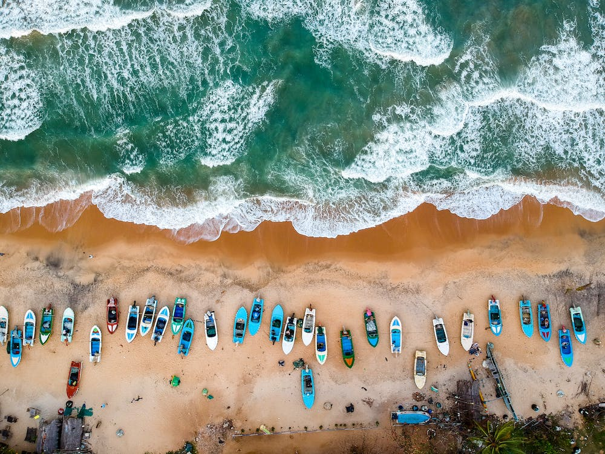
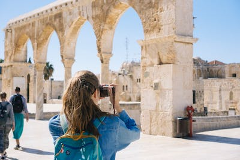

Featured Destinations

Paris
The Eiffel Tower is a wrought-iron lattice tower on the Champ de Mars in Paris, France.

Goa
Foreign tourists, mostly from Europe, arrive in Goa in winter, whilst the summer and monsoon seasons see many Indian tourists.

Rajasthan
The generally arid climate has made stepwells (baoli or bawdi) more common than in other parts of India, as well as the distinctive covered taankaunderground tanks.